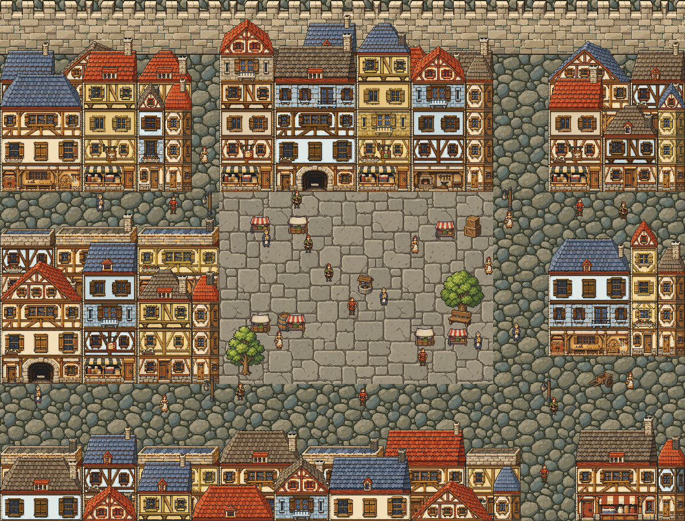
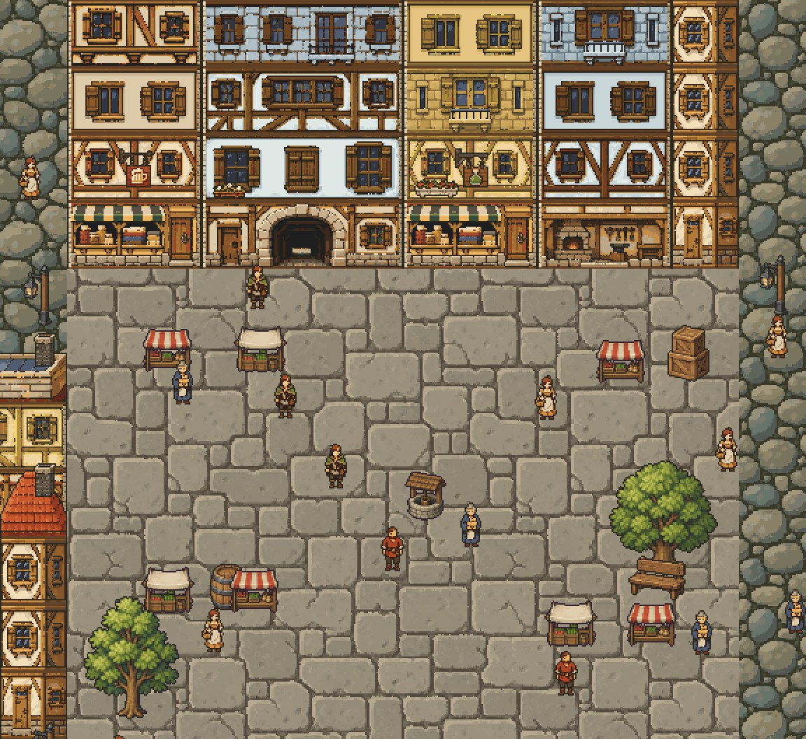
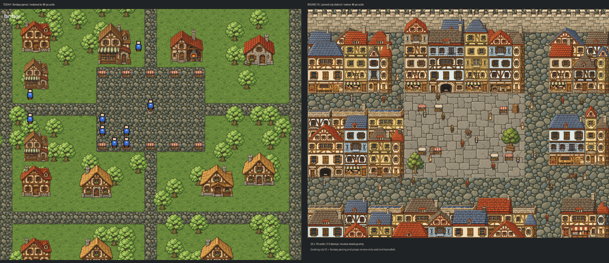
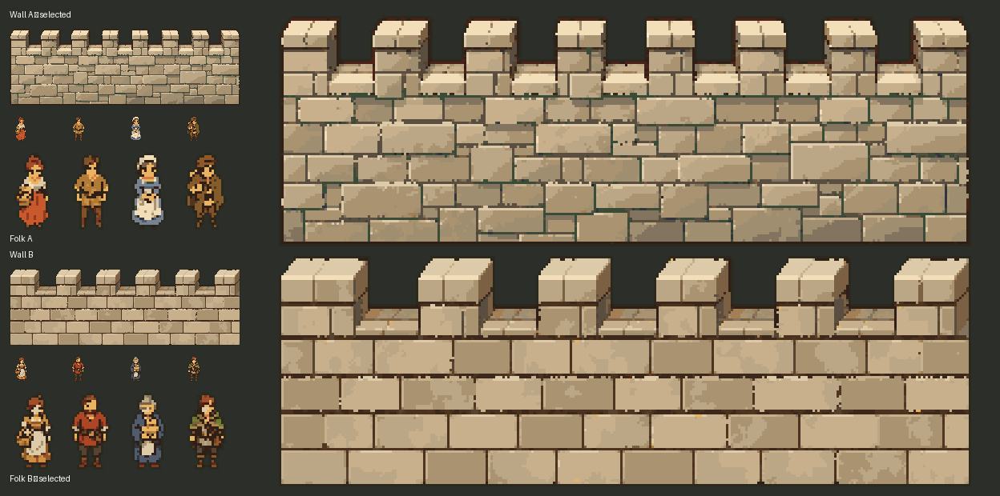

Dense city district at native 48 px cells. 48 buildings, 2–5 storeys, joined frontages, rear roof masses, a north curtain wall, bent east lane and paved market. All game art and compose.py are unchanged.
Main PNG · 2× detail · Same-scale comparison · 4× native proof


The source fantasy panel is 600×500 with 24 px cells. Its exact 2× enlargement restores 48 px cells for comparison; the proposed city stays at 1×. The complete source panel is retained.

The pack contains no folk tile. Four review-only people and a wall were drawn in two variants each, keyed from magenta, registered, reduced by 64-sample mode and palette-locked. Wall A and folk B were selected. Nothing was added to out/.

Course lines and joins · Rear/front depth · Bent lane · Curtain wall · Market
Every used city piece, prop and review-only drawing has r15-M-piece-*, r15-M-prop-* or r15-M-drawing-* proofs at 1× and exact 4×. Grounds have literal 3×3 repeats at both scales: street, square, town ground (not placed in the scene).
Composition recipe · Drawing prompts · Registration and cleanup · Pixel audit · Critic self-review
Critic self-review: PASS; failed review files: none. This is a saved-art visual proposal, not an in-engine movement or collision test.